Diventa Team Principal e ingegnere di pista. Circuiti reali, fisica del giro, degrado gomme realistico e gare in 3D o sulla mappa 2D. Costruisci una dinastia in Formula, Rally ed Endurance.
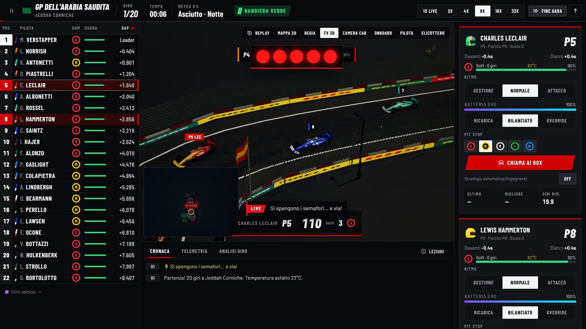
Un'interfaccia da gioco vero, Scontro Totale più profondo e circuiti ancora più vivi.
Menu in stile console, hub con l'evento in primo piano, colori della squadra, torre dei tempi da diretta TV.
Sei prove di Scontro Totale con punti per posizione, demolizioni e giro veloce, più due nuovi eventi.
Cambio con marce, trazione diversa per ogni auto, IA con personalità che sorpassa e sperona di proposito.
Asfalto gommato, cartelloni, paddock, folla che fa la ola, freni incandescenti e scintille.
Non solo manager: prendi il volante e distruggi tutto.
Fisica vera, salti, derapate, lamiere che si piegano, paraurti e cofani che volano via, fumo e fuoco.
Barili, pile di gomme, casse, balle di fieno e transenne da travolgere.
Fai volare l'auto e sperona gli avversari per ricaricare il nitro.
Ultima auto che si muove vince. Più una cava con salti, una figura a otto e una pineta.
Tre telecamere, filtri immagine e una freccia per non perdere mai la tua auto.
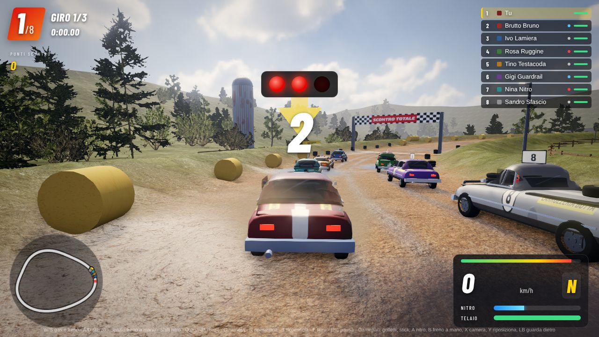
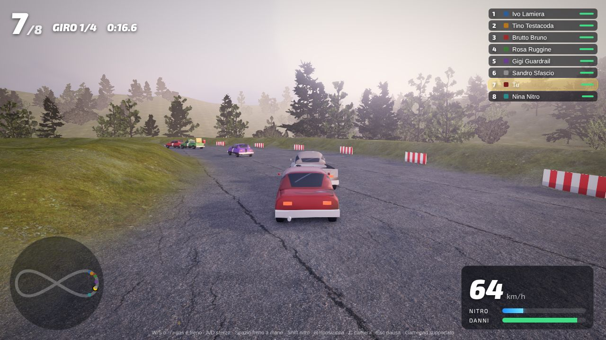
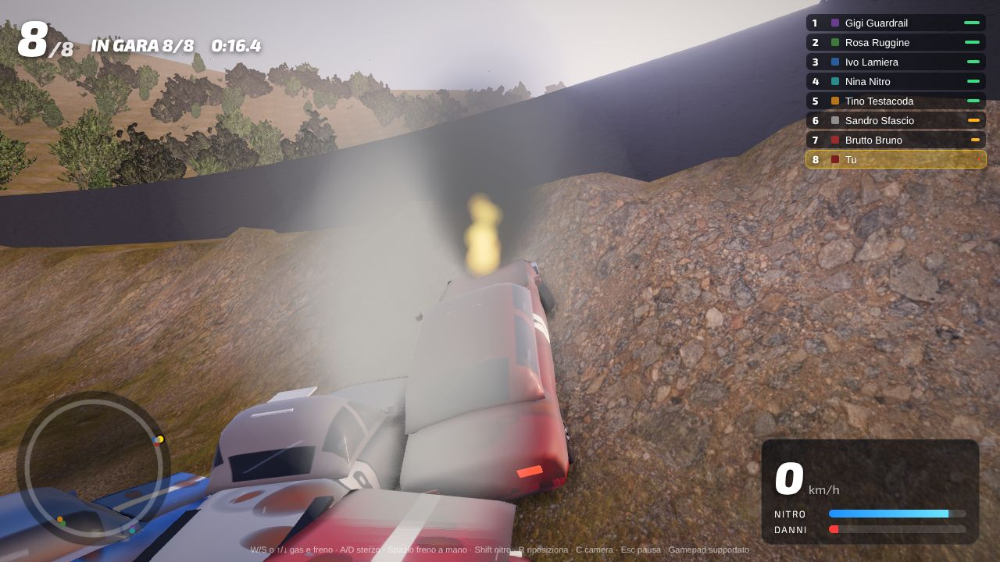
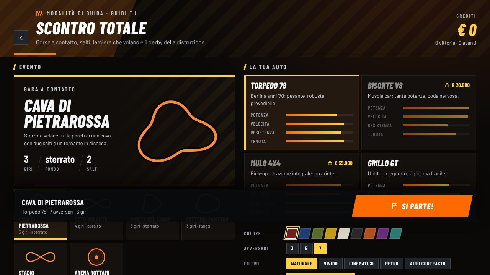
Più realismo in pista, più profondità nella gestione, un'interfaccia da gioco premium.
Colline all'orizzonte, cordoli 3D, vie di fuga verniciate, gomma e segni di frenata, cartelli, commissari, torri TV, pozzanghere riflettenti e notte illuminata dai fari.
Personalità e procuratori, controfferte, offerte dei rivali per i tuoi piloti, precontratti e crescita o declino con l'età.
Track limits, collisioni, unsafe release, punti patente, power unit contingentate con penalità in griglia, parco chiuso e gomme assegnate.
Diciannove traguardi di carriera, da "Esordiente" a "Immortale", che ti seguono tra squadre e categorie.
Torre dei tempi con intervalli e colori dei settori, grafici dei distacchi, tooltip, scorciatoie da tastiera e supporto 1440p.
Vetture ricostruite sulle proporzioni delle auto vere.
Ala anteriore a quattro elementi, pance con undercut, fondo con diffusore, beam wing, coprimozzi da 18", halo e volante con display.
Berlina da rally con alettone e paraspruzzi; prototipo Le Mans con parafanghi alti, abitacolo a goccia e pinna; GT nel traffico.
Ruote che sterzano, rollio e beccheggio, spruzzi d'acqua dietro le auto sul bagnato.
Banner dei duelli con distacco, gomme e DRS, come in una diretta.
Circuiti senza zone rotte e un ambiente molto più realistico.
Niente più auto che girano su se stesse o si teletrasportano: geometrie ripulite, tratti vicini separati e un ponte vero sull'incrocio di Suzuka.
Migliaia di alberi e cespugli ricavati da modelli 3D fotogrammetrici Poly Haven (CC0), con ombre e otto angolazioni ciascuno.
Guard-rail in acciaio, blocchi Tecpro nelle frenate, muri in cemento nei cittadini e reti di protezione su tutto il tracciato.
Guarda la gara dagli occhi del pilota: halo, volante con display, specchietti.
Dopo un contatto i piloti si insultano via radio, l'altro risponde, il telecronista si scalda.
Più tensione in pista e più decisioni sulla vettura.
Ogni coppia di piloti ha un livello di tensione: duelli, contatti e ordini di scuderia lo fanno salire. Le faide rendono i duelli più aggressivi, abbassano il morale e scatenano drammi nel paddock.
Sottotitoli in diretta sulla gara: sorpassi, battaglie, cambi al vertice, giri veloci. I piloti si lamentano via radio dei rivali: «mi ha buttato fuori!».
Guarda la gara alla velocità vera, oppure accelera fino a 32x.
Interpreta il nuovo regolamento, scegli il pacchetto di metà stagione e decidi se puntare sull'anno in corso o sulla vettura del prossimo.
In 3D le auto non si attraversano più: si affiancano o si accodano, la pit lane ha la sua corsia e i box, gli edifici stanno fuori dalla pista.
Tribune a gradoni con il pubblico, prato e vie di fuga in ghiaia, palazzi colorati nei cittadini, box con vetrate.
Grafica rifatta da zero e un gioco molto più profondo e difficile.
Cielo fotografico HDRI, asfalto, erba e sterrato con texture reali, riflessi, bloom e antialiasing. Monoposto, hypercar e auto da rally rimodellate con livree dipinte, numeri e sponsor.
Safety car, pioggia, undercut del rivale, duelli: la gara si ferma e tocca a te decidere. Ogni scelta cambia davvero il risultato.
Tetto di spesa sullo sviluppo, ore di galleria in base alla classifica e la scelta tra la vettura di quest'anno e quella del prossimo.
Nuova categoria junior con 10 team e giovani talenti. Inizia dalla gavetta: vinci il titolo per salire in Formula Apex.
Geometria reale di Monza, Spa, Suzuka, Silverstone, Monaco, Interlagos, Las Vegas, Madring… più la Sarthe e il Fuji per l'Endurance. Lunghezze e tempi sul giro reali.
Velocità in curva dal raggio, carico aerodinamico, grip meccanico, potenza e resistenza. Monza premia il motore, Monaco il carico: la sensibilità di ogni pista è calcolata.
Telecamere TV, camera car, onboard ed elicottero. Pioggia, notte dinamica, cordoli e vie di fuga. Oppure la mappa 2D con telemetria.
Vita, degrado, "cliff", finestra di temperatura, carburante, evoluzione della pista, scia sporca e DRS. Safety car e VSC.
Pianificatore strategico con curve di degrado, telemetria, analisi del giro voce per voce e un'accademia di lezioni su undercut, overcut e gestione gomme.
Colonna sonora generativa (menu, gestione, gara, vittoria) e motori sintetizzati con cambio marce: V6 ibrido, V8 hypercar, 4 cilindri turbo da rally.
Livelli manager, albero di 15 abilità (Strategia, Tecnica, Commerciale), obiettivi stagionali con premi, 15 trofei sbloccabili.
Scegli categoria, circuito, squadra, durata (fino al 100% dei giri reali) e meteo: in pista in 10 secondi.
Ammira la tua vettura con la livrea personalizzata, numero e sponsor su una piattaforma girevole con luci da studio.
Gestisci la batteria ibrida: ricarica, bilancia o scatena l'Override per attaccare e difenderti nei duelli.
I piloti ti chiamano: "le gomme sono finite", "fammi passare", "inizia a piovere". Decidi tu. Libera lotta, mantenere o scambio di posizioni.
Intro cinematografica sul circuito durante il semaforo e regia automatica che segue i duelli più accesi.
Conferenze stampa dopo ogni gara ed eventi con scelte e conseguenze: pezzi sperimentali, indagini della Federazione, sponsor, staff.
Premi di fine stagione, campioni di ogni anno, leggende del paddock e record della pista.
8 scenari in 3 categorie: Monaco sotto il diluvio, la notte della Sarthe, i salti di Finlandia... Conquista l'oro.
Sei GP con la gara Sprint del sabato: punti dall'1° all'8°, poi il Gran Premio.
Nell'Endurance le hypercar doppiano la classe GT: ogni doppiaggio costa tempo, di notte e sotto la pioggia di più.
Rivedi sorpassi e incidenti con un clic (o tasto R): camera car, TV, elicottero e onboard.
Prove speciali 3D con colline e dossi: ad alta velocità la macchina decolla.
Senza dati misurati le previsioni sul degrado sono stimate: fai i long run per una strategia precisa, come un vero ingegnere.
Prima di ogni GP la simulazione fisica ti dice dove sarai forte e quale componente sviluppare. L'assetto ideale dipende davvero dal tracciato.
Zone DRS, settori colorati e posizioni di tutte le vetture: la base perfetta per gestire la gara.
Inizia in una categoria e, stagione dopo stagione, ricevi offerte anche dalle altre. 26 squadre e oltre 70 piloti ispirati al paddock reale (con nomi... leggermente diversi).
Scegli il concetto tecnico, avvia progetti R&D con rischio e rendimenti decrescenti, disegna la livrea.
Mappa live, classifica, usura gomme, meteo radar. Ritmo, pit stop e mescole in ogni momento.
Minigioco di setup basato sul feedback dei piloti: un buon assetto vale mezzo secondo al giro.
Stipendi, durata, clausole rescissorie. Scopri i giovani talenti con l'Accademia.
Firma sponsor con bonus obiettivo, gestisci budget, stipendi e montepremi.
Obiettivi del consiglio, rischio licenziamento, cambi di regolamento, trofei e obiettivi sbloccabili.
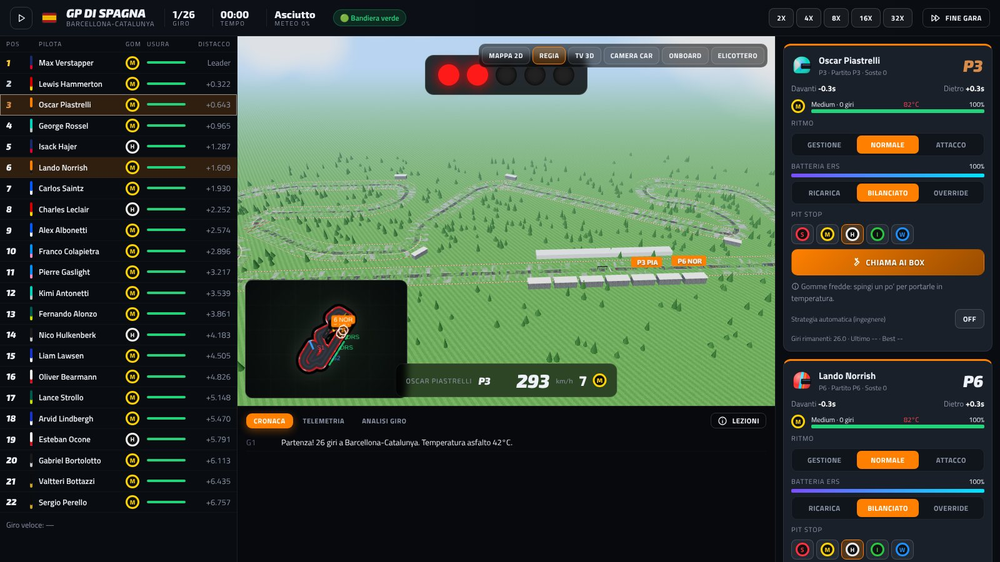
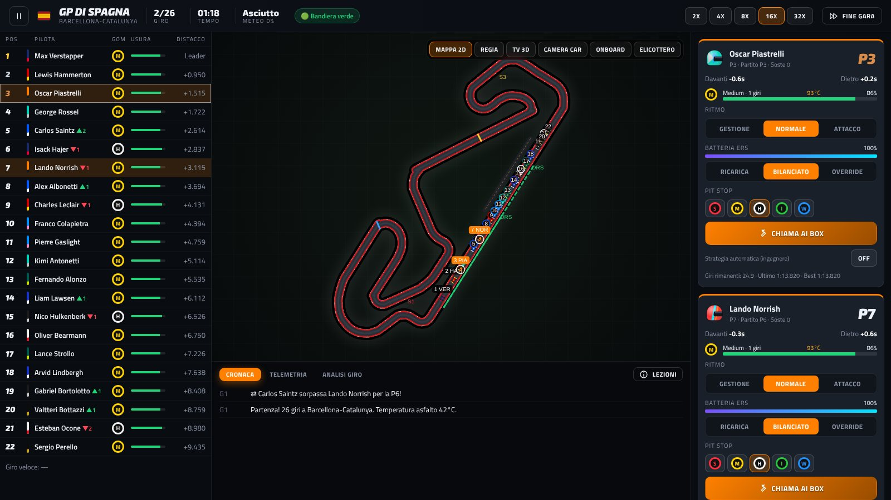
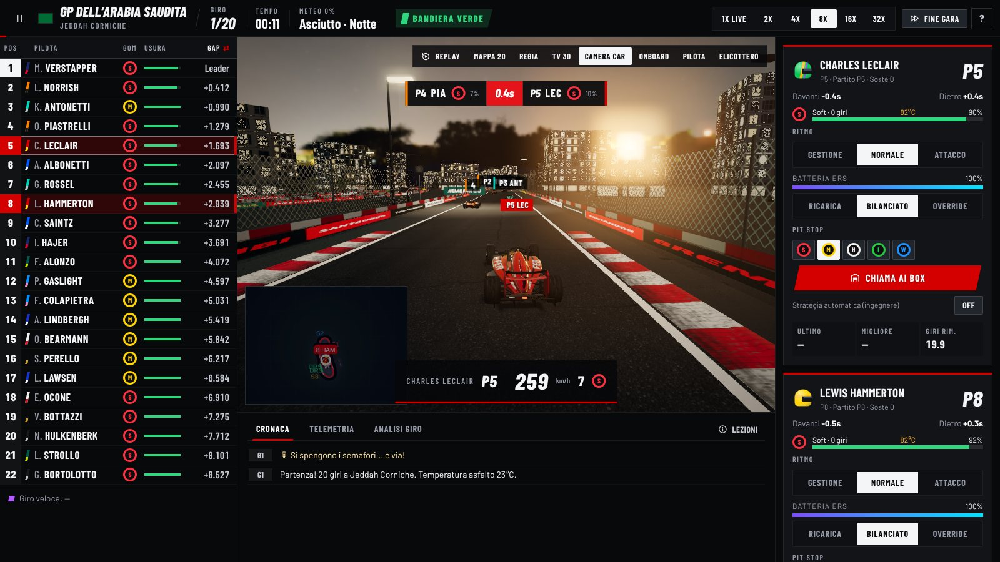
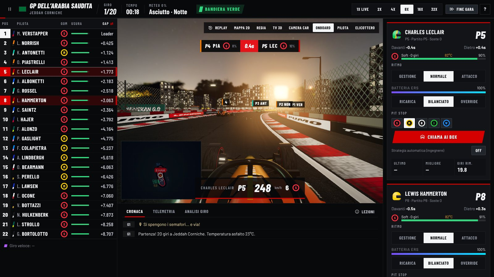
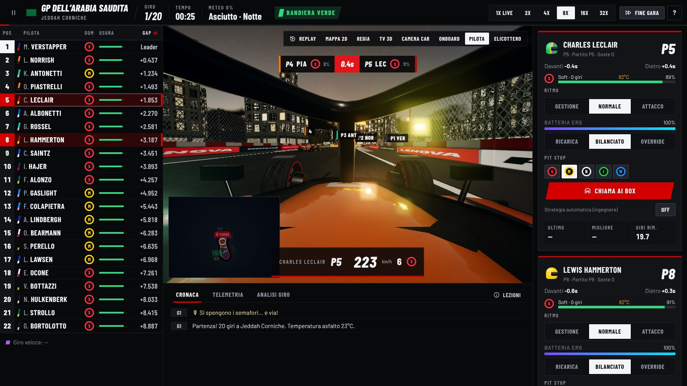
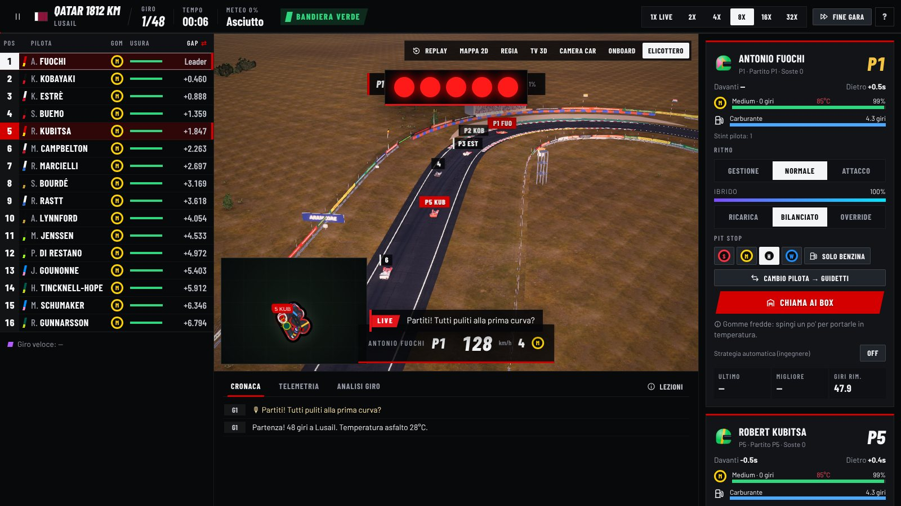
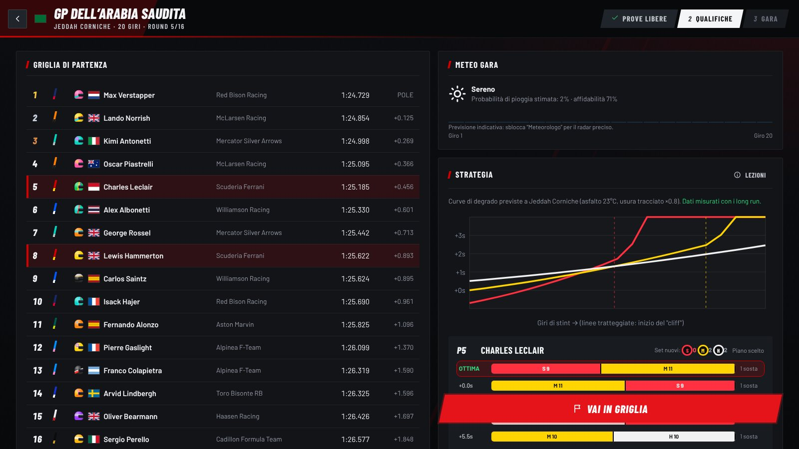
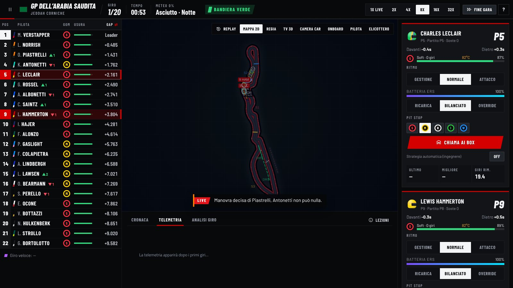
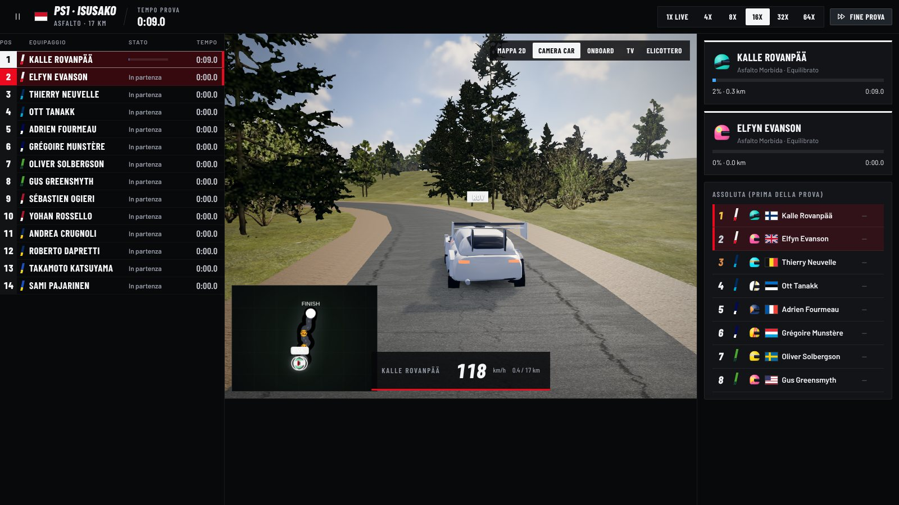
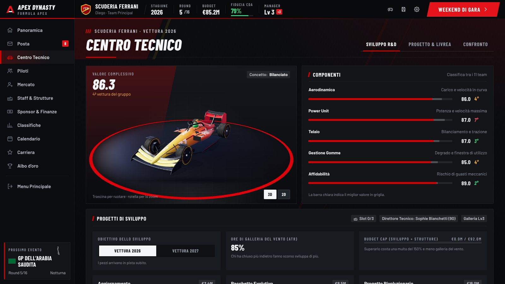
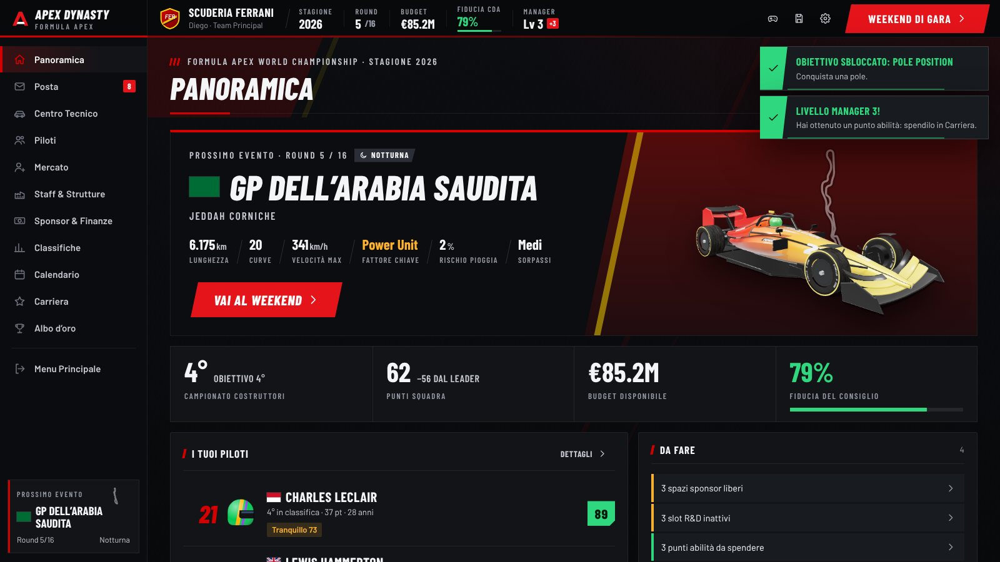
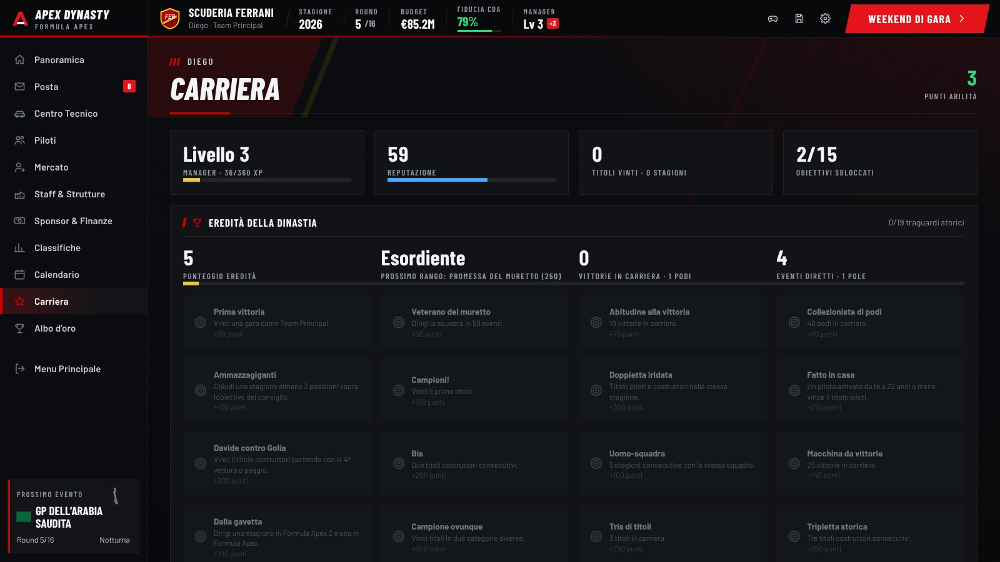
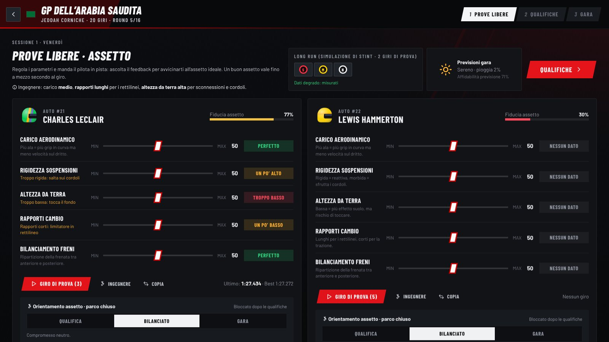
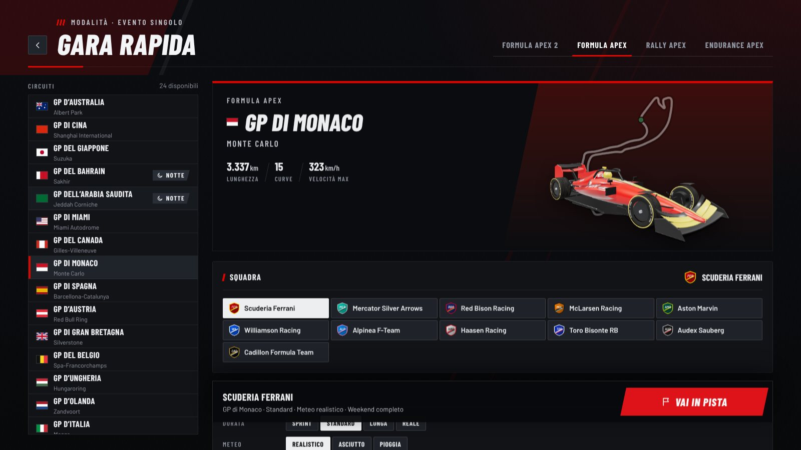
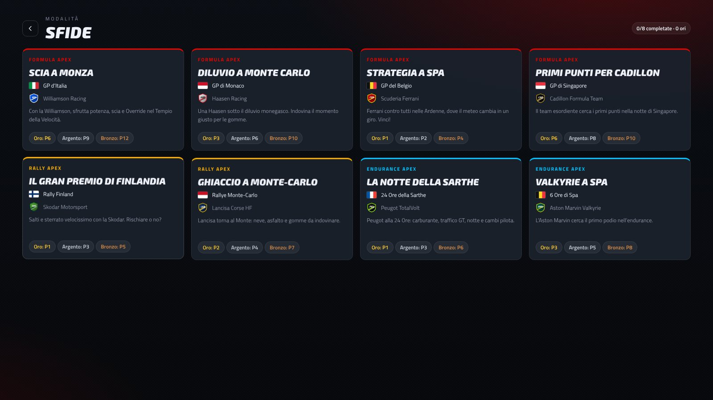
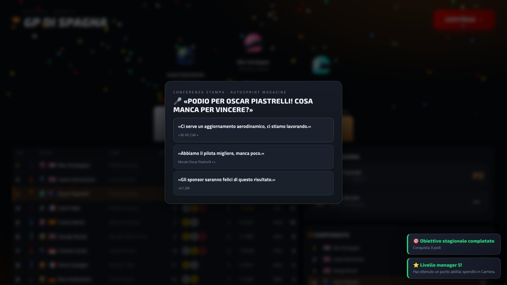
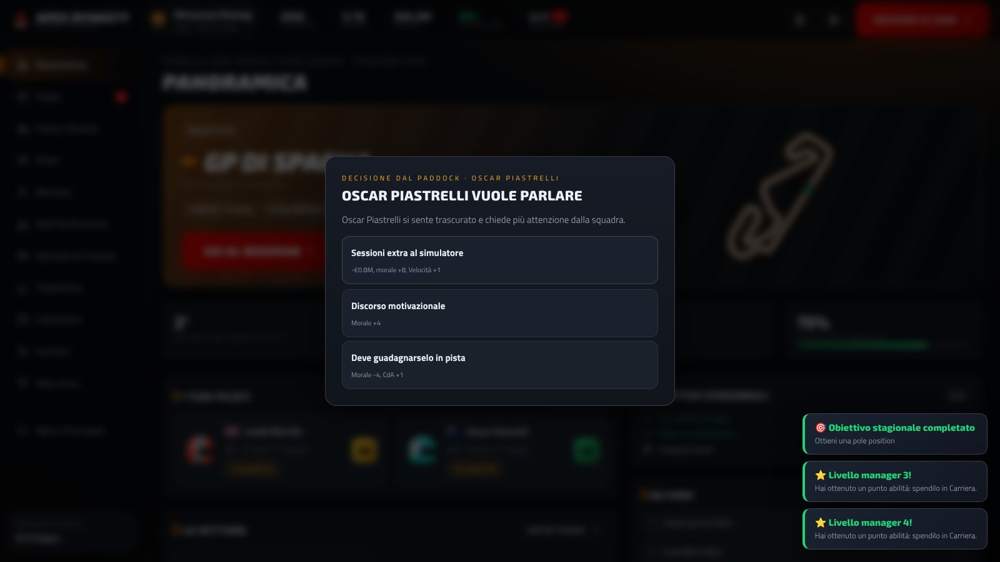
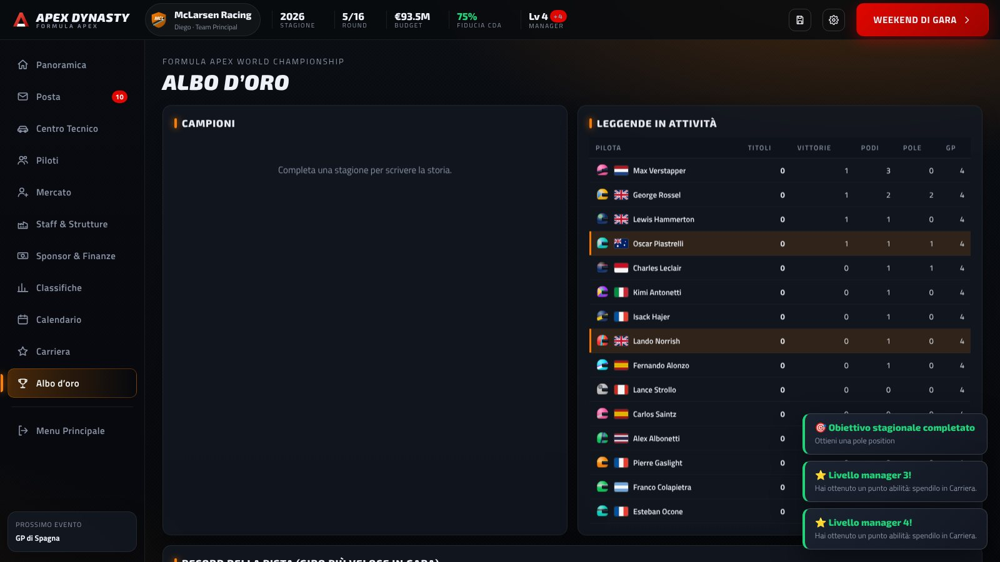
Gratis. Nessun account. I salvataggi restano sul tuo computer.
xattr -cr "/Applications/Apex Dynasty.app".